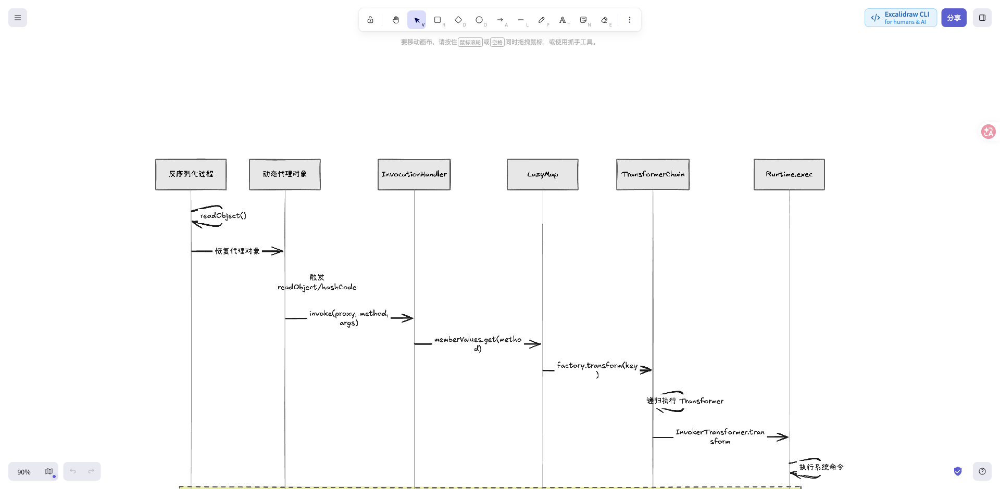

手绘风协作白板：刻意的粗糙笔触，让还在讨论中的图不至于看起来像已经定稿。
真实运行的 Excalidraw，初始场景是库内置的示例架构图
这张图里没有一条直线：每个矩形的四条边都带轻微抖动，箭头略微弯曲，文字是手写的。这不是滤镜，是 rough.js 逐笔画出来的结果。

一个跑在浏览器里的白板，不需要账号，打开就能画，可以把图导出成 SVG 或 PNG；源码开源，也可以自己部署一份。
它刻意把「草稿感」做成风格：同一张图在 Excalidraw 里永远看起来像刚画完，而不是刚交付。